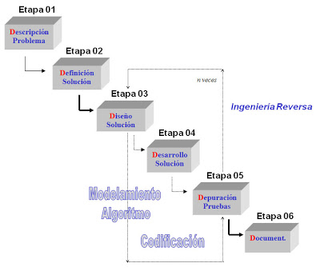
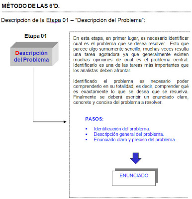
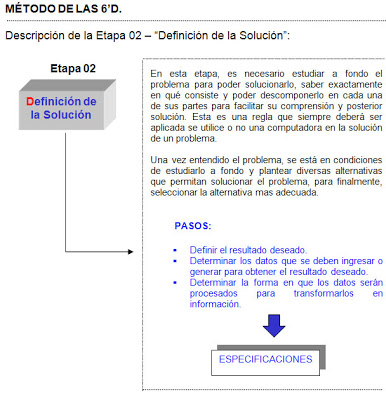
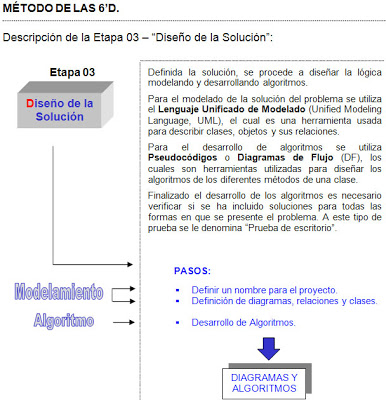
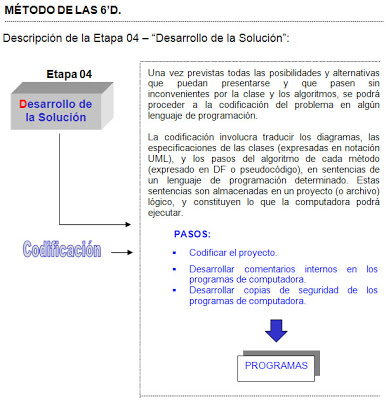
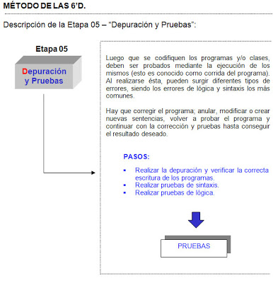

Método de las 6D
En la siguiente figura se muestra el Método de las 6’D con sus respectivas etapas:

Etapas y pasos

El resultado obtenido en esta etapa es un enunciado claro del problema que se desea solucionar.

El resultado obtenido en esta etapa son las especificaciones de lo que se debe hacer para solucionar el problema.

El resultado obtenido en esta etapa son los diagramas y los algoritmos que especifican cómo se debe hacer para solucionar el problema.

El resultado obtenido en esta etapa son los programas y/o clases, codificados en un lenguaje de programación, que permiten solucionar el problema.

tomado de : http://algoritmoyestructuradedatos.blogspot.com.co/2011/08/metodo-de-las-6d.html